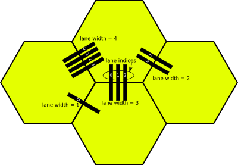
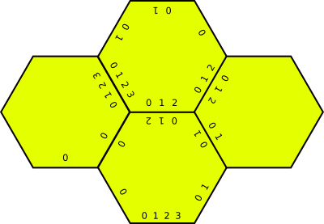
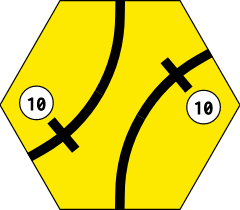
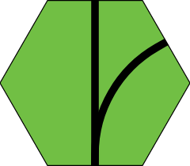
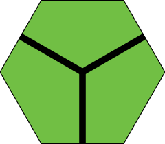
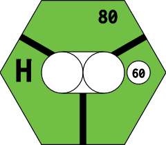
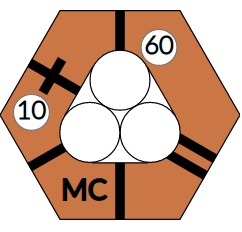
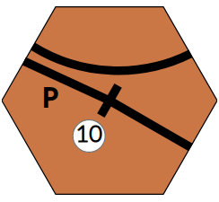
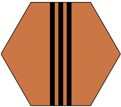

Tile Reference
Tiles are defined as string expressions in lib/engine/tile.rb. This page covers the tile language, the anatomy of a tile, and the development routes available for inspecting tiles in a running local instance.
Development Routes
A running local instance (see Getting Started) exposes these routes for tile development:
| Route | Purpose |
|---|---|
/tiles/all | Renders all tiles defined in lib/engine/tile.rb |
/tiles/<tile_name> | Renders a single tile at large scale |
/tiles/<game_title>/<hex_or_tile> | Renders a hex or tile from a specific game at large scale. Multiple hex/tile names separated by +. |
/tiles/<game_titles>/all | Renders all tiles for one or more game titles (fuzzy matched, +-separated) |
/map/<game_title> | Renders the full map for the given game title |
Optional URL parameters:
| Param | Meaning |
|---|---|
r=<rotation> | Integer rotation, multiple rotations as +-separated integers, or all for all 6. Ignored at /tiles/all. |
n=<location_name> | Location name rendered on tiles that have at least one stop. Pre-printed names are not overridden. Ignored at /tiles/all. |
grid | Overlays the triangular grid to identify regions on a tile. |
Rotation can also be embedded in the tile name: /tiles/9-1 renders tile 9 with rotation 1; /tiles/7-2+8-2 renders tiles 7 and 8 both with rotation 2. In-name rotation ignores the r= param.
Anatomy of a Tile
A flat-top hex and a pointy-top hex label their edges and regions differently. Both diagrams below show the edge numbering used by path=a:N,b:N in the tile language.


Tile Language
A tile string consists of main parts separated by ;. Each main part has sub parts separated by ,. Properties within sub parts are separated by |.
Some tile properties are not part of the tile string and are defined elsewhere in the game configuration:
- Color — set on the
Hexor upgraded from the game map - Location names — set in
LOCATION_NAMESconstant - Reserved city slots — set in
CORPORATIONS/COMPANIEShome coordinates - Blockers — set via
blocks_hexesabilities
Main Parts
city
A revenue-generating city node that can hold station tokens.
| Sub part | Type | Default | Meaning | |
|---|---|---|---|---|
slots | integer | 1 | How many tokens this city can hold | |
revenue | integer or phase spec | required | Revenue value; see phase-based revenue below | |
groups | `\ | `-separated strings | — | Routes cannot contain more than one stop from the same group |
hide | 1 | — | Do not render the revenue value | |
loc | e.g. center, 2 | — | Position on the hex (pointy layout) |
town
A smaller revenue center that cannot hold station tokens.
| Sub part | Type | Default | Meaning | |
|---|---|---|---|---|
revenue | integer or phase spec | required | Revenue value | |
style | rect / dot / hidden | auto | rect when 1–2 paths connect; dot when 0 or 3+; hidden for special offboards | |
groups | `\ | `-separated strings | — | Same-group route restriction |
hide | 1 | — | Do not render the revenue value |
offboard
An off-map revenue terminus. Not rendered as a node itself, but changes how connecting track is drawn — track to offboards is tapered and pointed.
Same sub parts as city (revenue, groups, hide).
path
A track segment connecting two points.
| Sub part | Type | Meaning |
|---|---|---|
a | edge int or _N node ref | required — first endpoint |
b | edge int or _N node ref | required — second endpoint |
terminal | 1 or 2 | Non-passthrough path (offboard track). 2 draws a shorter taper. |
ignore | 1 | Skip this path during node-walk (used for special offboards) |
a_lane | width.index | Lane width and index for the a endpoint |
b_lane | width.index | Lane width and index for the b endpoint |
lanes | integer | Number of parallel tracks. Auto-assigns a_lane / b_lane for each copy. |
track | broad / narrow / dual | Track gauge type, used for display and connectivity. Default: broad |
Node references use an underscore followed by the zero-based index of the previously defined part: _0 is the first city/town/offboard/junction, _1 is the second, etc.
label
A large letter or short text rendered on the tile (e.g. H, OO, Chi, Z).
label=H
upgrade
Terrain cost marker.
| Sub part | Type | Meaning | |
|---|---|---|---|
cost | integer | required — cost to lay a tile on this hex | |
terrain | mountain / water (or `mountain\ | water`) | Terrain type(s) |
loc | corner spec | Render position (pointy layout only) — 5.5 = between edges 5 and 0 |
border
Modifies the rendering of one hex edge.
| Sub part | Type | Meaning |
|---|---|---|
edge | integer | required — which edge (0–5) |
type | mountain / water / impassable | Border type. Without type, draws a color-matched line to join adjacent tiles. |
cost | integer | Cost to cross (mountain/water borders) |
junction
The center point of a Lawson-style tile. Referenced as a node by path using _N.
junction;path=a:0,b:_0;path=a:2,b:_0;path=a:4,b:_0
icon
An SVG icon on the tile.
| Sub part | Type | Meaning |
|---|---|---|
image | string | required — name; rendered from public/icons/<image>.svg |
name | string | Name for this icon instance; defaults to image |
sticky | 1 | Icon remains visible after a tile upgrade |
blocks_lay | (flag) | Tile cannot be placed normally; only via special ability |
loc | corner spec | Render position (pointy layout only) |
frame
Colored border frame around the tile.
| Sub part | Meaning |
|---|---|
color | required — primary frame color |
color2 | Optional second frame color |
Phase-Based Revenue
Revenue that changes by phase uses an underscore-separated phase_value format, with multiple phases separated by |:
revenue:yellow_40|green_50|brown_60|gray_80Lanes
Lanes specify paths for double-track, treble-track, and quad-track tiles. Each path endpoint has two attributes:
- width — number of tracks connecting to that edge
- index — position within those tracks (0 = most clockwise)
The lanes sub part on a path automatically creates N parallel paths between the two endpoints with correctly assigned a_lane / b_lane values. Use a_lane / b_lane explicitly only when endpoints connect in an unusual way (e.g. a double-track edge to a single-track edge).


Tile String Examples
Tile #1 — two towns connected by through track:
town=revenue:10;town=revenue:10;path=a:1,b:_0;path=a:_0,b:3;path=a:0,b:_1;path=a:_1,b:4
Tile #23 — plain track, no revenue center:
path=a:0,b:3;path=a:0,b:4
Lawson tile #81 — junction with three arms:
junction;path=a:0,b:_0;path=a:2,b:_0;path=a:4,b:_0
1889 — tile 439 (city with label and upgrade cost):
city=revenue:60,slots:2;path=a:0,b:_0;path=a:2,b:_0;path=a:4,b:_0;label=H;upgrade=cost:80
1889 — preprinted tile for H5 (terrain only, no track):
upgrade=cost:80,terrain:water|mountain
18Chesapeake — preprinted tiles for A3 and B2 (split offboard with border and phase revenue):
- A3:
city=revenue:yellow_40|green_50|brown_60|gray_80,hide:1,groups:Pittsburgh;path=a:5,b:_0;border=edge:4 - B2:
offboard=revenue:yellow_40|green_50|brown_60|gray_80,groups:Pittsburgh;path=a:0,b:_0;border=edge:1

18Chesapeake — preprinted tile for H6 (two-city OO hex with water upgrade cost):
city=revenue:30;city=revenue:30;path=a:1,b:_0;path=a:4,b:_1;label=OO;upgrade=cost:40,terrain:water
18Chesapeake — preprinted tile for K3 (two unconnected towns):
town=revenue:0;town=revenue:0
18MEX — upgrade for Mexico City (multi-slot city with town, lanes, and label):
city=revenue:60,slots:3,loc:center;town=revenue:10,loc:2;path=a:0,b:_0;path=a:1,b:_0;path=a:3,b:_0;path=a:2,b:_1;path=a:5,b:_0,lanes:2;path=a:_1,b:_0;label=MC
18MEX — upgrade for Puebla (town with mixed-lane paths and label):
town=revenue:10;path=a:2,b:_0,a_lane:2.1;path=a:5,b:_0;path=a:2,b:4,a_lane:2.0;label=P
1831 — tile 301c (triple-track path using lanes:3):
path=a:0,b:3,lanes:3
What's next
- Ability types that interact with tile laying: Ability Types Reference
tile_laysslot mechanics in the engine: Game Engine- Developer routes for testing other game features: Getting Started
Version: 2026-05-08 — derived from TILES.md, lib/engine/tile.rb.